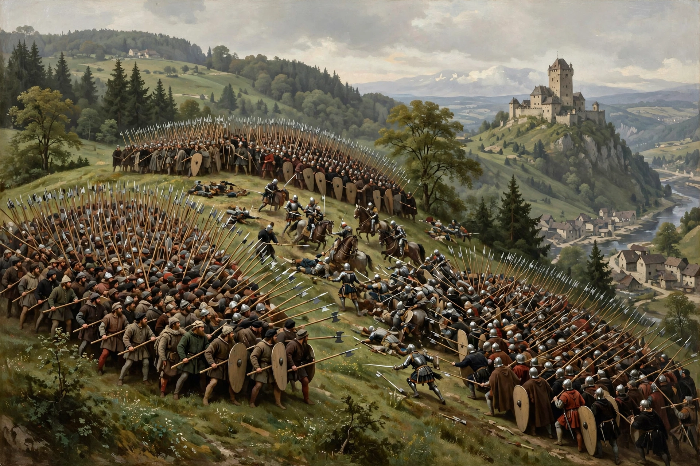

| Battle of Laupen | ||
|---|---|---|
| Part of the expansion of the Old Swiss Confederacy | ||
| Date | 21 June 1339 | |
| Location | Laupen, canton of Bern, Switzerland | |
| Result | Bernese and Swiss victory | |
| Belligerents | ||
| Bern and its Swiss allies (Uri, Schwyz, Unterwalden) | Fribourg, Burgundian and Habsburg-allied nobility | |
| Commanders and leaders | ||
| Rudolf von Erlach | Gerard de Valengin; Rudolf von Nidau | |
| Strength | c. 6,000 (incl. c. 1,000 Confederates) | c. 16,000–17,000 (incl. c. 1,200 armoured horsemen) |
| Casualties and losses | Light | c. 1,000–1,500 killed |

The Battle of Laupen was fought on 21 June 1339 between Bern and its allies and a coalition of Fribourg and feudal lords of Burgundy and the Habsburg lands. The Bernese victory secured the town of Laupen, marked a milestone in the rise of the Old Swiss Confederacy, and led in 1353 to Bern's permanent ("eternal") alliance with the Confederates. It is one of the first battles in which Swiss infantry demonstrably defeated a force combining feudal cavalry and infantry in open battle.
Laupen, a strategic bridgehead on the Sense river west of Bern, was besieged in 1339 by an army of Bern's rivals — Fribourg, the bishops and counts of the Burgundian nobility, and Habsburg supporters — jealous of Bernese expansion. Bern called on its allies: the Forest Cantons of Uri, Schwyz and Unterwalden sent about a thousand men, and contingents came from Solothurn and other partners. Rudolf von Erlach, a veteran of the Italian wars, commanded the relief army.
The allies took up position on the Bramberg hill, forming their infantry in the deep wedge-like blocks that became a Swiss trademark, with slingers and crossbowmen skirmishing ahead. The Burgundian men-at-arms drove off the Bernese skirmishers but broke against the steady pike-and-halberd formations; when the Bernese centre advanced downhill, the Fribourg infantry collapsed into the Sense and the cavalry fled. The garrison of Laupen castle sallied to join the pursuit. Some 1,000–1,500 of the besiegers were killed, against modest Bernese losses.
The war ended with the Peace brokered by Queen Agnes of Hungary in 1340, confirming Bernese possession of Laupen. The battle enhanced the Confederates' military reputation begun at Morgarten (1315), and in 1353 Bern entered the Confederation as its eighth member.
Chronicle of Konrad Justinger; Delbrück, Hans, History of the Art of War, vol. III.